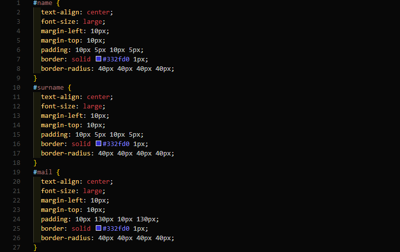
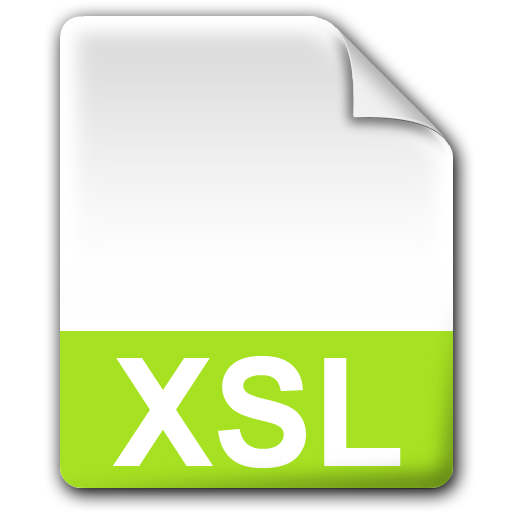

Stil Sayfası Dilleri

Stil sayfası dili veya stil dili , yapılandırılmış belgelerin sunumunu
ifade eden bir bilgisayar dilidir . Yapılandırılmış belgelerin çekici
bir özelliği, içeriğin birçok bağlamda yeniden kullanılabilmesi ve
çeşitli şekillerde sunulabilmesidir. Farklı sunumlar üretmek için
mantıksal yapıya farklı stil sayfaları eklenebilir.
Yaygın kullanıma sahip modern bir stil sayfası dili, HTML , XHTML , SVG
, XUL ve diğer biçimlendirme dillerinde yazılmış belgelere stil vermek
için kullanılan Basamaklı Stil Sayfaları'dır (CSS) .
Yapılandırılmış belgelerdeki içeriğin sunulması için, örneğin renkleri,
yazı tiplerini ve düzeni tanımlayan bir dizi stil kuralı uygulanmalıdır.
Stil kuralları koleksiyonuna stil sayfası denir. Yazılı belgeler
biçimindeki stil sayfaları, sunum, yazım ve noktalama tutarlılığını
sağlamak için editörler ve tipograflar tarafından uzun bir kullanım
geçmişine sahiptir. Elektronik yayıncılıkta stil sayfası dilleri, yazım
ve noktalama işaretlerinden ziyade çoğunlukla görsel sunum bağlamında
kullanılır.
CSS

Cascading Style Sheets (Basamaklı Stil Şablonları ya da Basamaklı Biçim
Sayfaları, bilinen kısa adıyla CSS), HTML'e ek olarak metin ve format
biçimlendirme alanında fazladan olanaklar sunan bir işaretleme dilidir.
İnternet sayfaları için genelgeçer şablonlar hazırlama olanağı verdiği
gibi, bağımsız olarak harflerin stilini, yani renk, yazı tipi, büyüklük
gibi özelliklerini değiştirmek için de kullanılabilir. Bu tekniğin en
önemli özelliği kullanımındaki esnekliktir.
Bir Web sayfası içerisinde birbiriyle uyumlu birkaç renk ve birkaç yazı
tip kullanılır ve bunları her sayfada ayrı ayrı tekrar belirtmek yerine
CSS yardımıyla bir sefer tanımlayıp bütün Web sayfalarında ortak olarak
kullanılabilir. Böylece sayfaların hafızadaki boyutu epey küçüldüğü gibi
güncelleme yapmak da kolaylaşır.
XSL
XSL ya da tam adıyla Extensible Stylesheet Language Family (Türkçe karşılığı: Genişletilebilir Biçimlendirme Dili Ailesi), XML dosyalarının içindeki verilere ulaşma, ulaştıklarını başka şekillere dönüştürme ve gösterime hazırlama emirleri içeren kendileri de XML kurallarina uyan diller ailesinin adıdır.
LESS

LESS, CSS formatına derlenebilen açık kaynak kodlu dinamik bir biçim dilidir. LESS sunucu veya istemci tarafından çalıştırılabilir. LESS SASS'tan esinlenilerek Alexis Sellier tarafından tasarlanmıştır ve SASS'ın yeni bir versiyonu olan SCSS'e ilham kaynağı olmuştur. İlk versiyonu Ruby ile yazılmış olmakla beraber ilerleyen versiyonlarda Javascript'e geçilmiştir. LESS'in sahip olduğu mekanizmalar; değişkenler, iç içe geçme, mixin'ler, operatör ve fonksiyonlar olarak listelenebilir. LESS'in diğer CSS ön-derleyicilerinden farkı LESS'in tarayıcı tarafında çalışan less.js ile gerçek zamanlı derleme imkânı sunmasıdır.
SASS

SASS (Syntactically Awesome Stylesheets : Yazımsal Olarak Harika Biçim Sayfaları), CSS formatına derlenebilen dinamik bir biçim şablon dilidir. İlk olarak Hampton Catlin tarafından tasarlanmış ve Natalie Weizenbaum tarafından programlanmıştır. İlk versiyonların ortaya çıkmasını takiben Weizenbaum ve Chris Eppstein SASS içerisinde kullanılabilen basit bir betik dili olan SassScript'i geliştirerek SASS'ın kabiliyetlerini arttırmışlardır. SASS'ın ilk tasarımında yazım şekli Haml benzeri bir yapıda olup kod blokları girintilerle (indentation) ayrılmış, farklı SASS kurallarını ayırmak için ise yeni satır karakter kullanılmıştır. SASS'ın daha yeni yazım şeklide olan SCSS'te ise CSS'e daha yakın bir format kullanılmış, kod blokları süslü parantez ile kurallar ise noktalı virgül karakteri ile ayrılmıştır. Bu değişiklik sayesinde geçerli CSS kodları SCSS kodu olarak kullanılabilir hale gelmiştir.